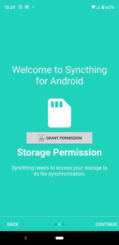
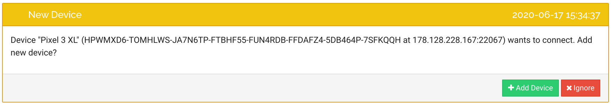
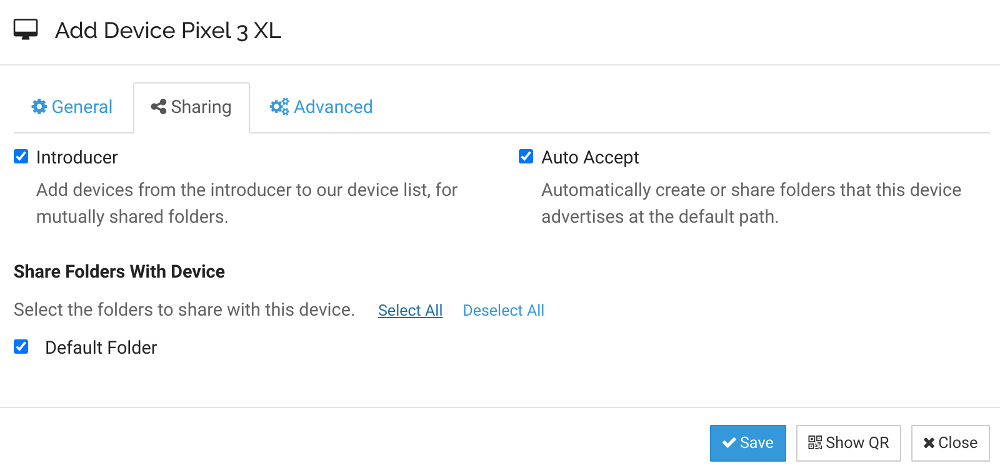
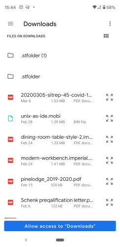
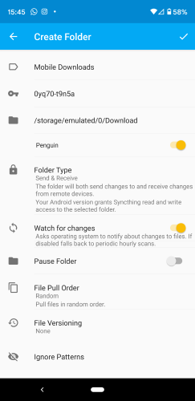
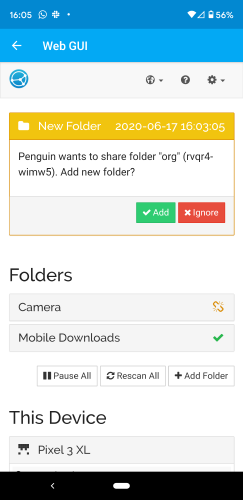

Syncthing is a way to keep things up-to-date across machines without going through any 3rd party servers. You get both backup and file synchronization without pesky servers just using the computer capacity you probably already have laying around. Lets give it a spin.
Installation on Debian
On the Getting Started page of syncthing they recommend using a GUI package, but we're going to install on debian on the command line.
# Add the release PGP keys:
curl -s https://syncthing.net/release-key.txt | sudo apt-key add -
# Add the "stable" channel to your APT sources:
echo "deb https://apt.syncthing.net/ syncthing stable" | sudo tee /etc/apt/sources.list.d/syncthing.list
# Update and install syncthing:
sudo apt-get update
sudo apt-get install syncthingThis installs both the syncthing binary as well as the systemd configuration file.
Initial Setup
Now we can start it up pretty easily.
systemctl enable syncthing@${USER}.service
systemctl start syncthing@${USER}.service
Since I'm running in a container, I needed to change the GUI listen address. Edit ~/.config/syncthing/config.xml and change the <gui><address> entry to be 0.0.0.0:8384 instead of 127.0.0.1, and then restart.
systemctl restart syncthing@${USER}.serviceNow go to locahost:8384 and you should be see the WebUI. It should also give you a warning and opportunity to set a username and password, so go ahead and set one up. Also might as well use HTTPS because why not.

This technique would also work if you installed it remotely.
Adding your phone
If you are using Android, lets install the Syncthing Android App from the Play Store. I'm not sure if there's an iOS build, but I doubt it would be super useful anyway since Apple locks things down into their own ecosystem that's doesn't play very nicely with others. You might be able to use it for storage though.
Once installed it will prompt you for permissions. Grant it

Now lets add the two machines together. On your computer, go to "Actions -> Show Device ID"
On the phone, go to the devices tab, and then press the + on the top right, and scan in the QR code from the computer. Give it a name, and also turn on "Introducer" which will make it easier to further add nodes into your network.
Give the system a few minutes to talk with each other, and eventually you'll see a window that will ask if you want to pair.

Note that these Device IDs are OK to share since you need you need to setup a two way connection between the devices to actually do anything. Discovery and relay servers for example know about device IDs, so they aren't the private ones that you really need to keep secure. I'm not an expert on this but this is what I understand.

Syncing downloads
One handy use case is to sync all mobile downloads to your laptop. If you've ever clicked on a PDF and tried to read it on the phone and gone through that pain, it's nice to be able to have that stuff on your laptop with a bigger monitor. This makes it easy to clean out the downloads on your phone if you end up with too much junk there – simply move it out of the folder on you laptop and syncthing will remove it from the phone. Lets add that now.
Go the Folders tab and press the + button on the top right. Name it something like "Mobile Downloads", and then select the Downloads folder. It will prompt for permission like so:

And you'll end up with something like

Once you press the check, it will start syncing to your laptop. If you've selected AutoAccept it will immediately start syncing, otherwise you will get a prompt on the web interface to see if that's really what you want to do.

It's useful to accept manually rather than automatically since that will give you an opportunity to decide where you want the directory named. If you choose automate it will be the cloud name not human readable, and I'm not sure how to change it after.
Ignore patterns
I'm an org-mode convert and I wanted a way to sync up my ~/org directory to the phone. Lets do that.
On the computer, go to the WebUI and select Add Folder. On first screen give it a name, and the right path. Select the phone device that you want to use and go to the Ignore Patterns pane. Since this is emacs, we don't need to sync any of the temporary files over.

Now that we've added it, we need to go to the phone an accept. Go back to the syncthings app on the phone, and in the hamburger menu select "Show WebUI". You'll get this dialog:

Add and there you go.
Ignore permissions
I also sync my .emacs.d folder to the phone, mainly for backup purposes. One thing is to be aware of is that you don't want to sync permissions, since Android loses those and the reverse sync will potentially reset what you have.
Using Orgzly
Orgzly is an Android app that knows about .org files. Now that we've set the sync of our org directory on the mobile phone's local directory, setting a local sync in a breeze to pull in whatever files you need to see. I mean, not much to say here really you've already got the folder.
Final setup
.emacs.d folder synced from my laptop. Since this is a Chromebook, I don't like to have anything "permanent" on it, and this is a nice way to get everything back when I wipe it compared to checking things into github. This goes to the phone purely for backup.
Downloads synced from the phone, which is mostly downloading PDFs and occasionally programming books. Everything gets pushed to the laptop, which I then move out of that folder into an archive.
reading which is that archive, where I have long form books and other paper and articles in there. I use pdf-tools in emacs to read and make annotations directly in the books, which is handy.
willschenk.com which is managed by git and stored in github, and published on github pages. Here, having commits and discrete chunks of changes makes sense. Since I only work on this on one computer at a time, it's not as important to keep it published, but if I go back to having a work computer I think adding this into syncthing makes sense.
So far I'm very impressed with the level of polish that syncthing has. It's a little cumbersome to figure out how to set it up, but once set up it just seems to work. I have more confidence now that if my laptop blew up I'd be able to get everything cleaned up faster. I still have a bunch of legacy archival stuff on my personal Dropbox that would be too much to store on the phone without putting in a SD card – which might make sense to do. With that my personal storage cloud would have most of what I'd need.